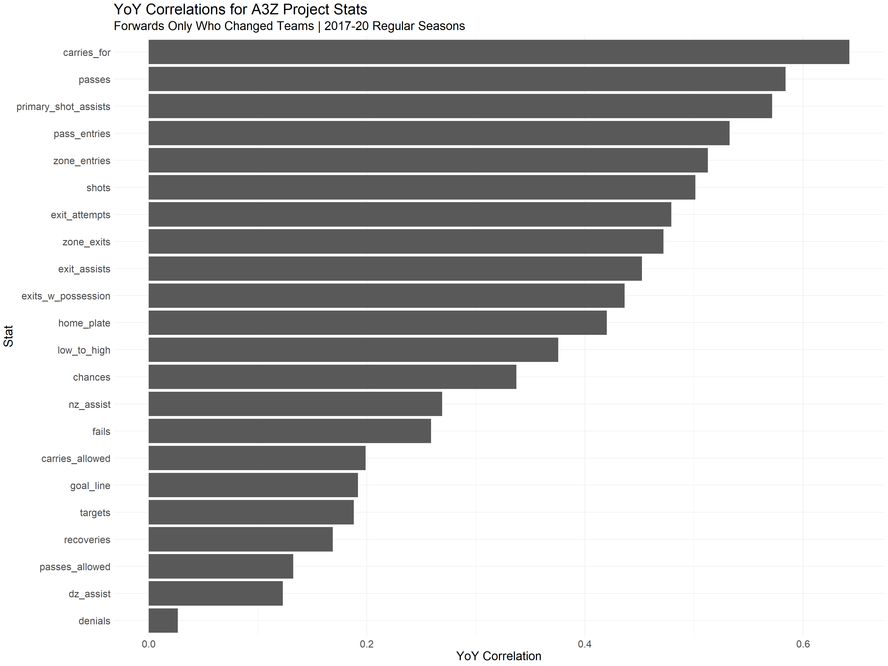
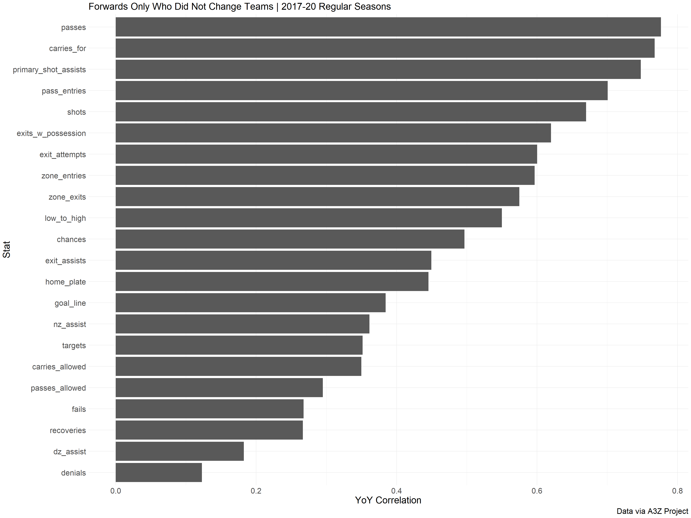
Carmen Ciardiello
January 1, 2024
The proliferation of “microstats” in the public space has been a boon in our understanding of hockey players. These stats include entries/exits (the concept and tracking of which were pioneered by Eric Tulsky), entry denials, and various types of passing plays (which to my knowledge were first studied in depth by Ryan Stimson). Corey Sznajder has been tracking this phylum of statistics and releasing them to the patrons of his All Three Zones project for public consumption and analysis. Corey has been an invaluable in increasing our understanding of the various skills players display while on the ice and his data is readily available for public-facing analysts to dig into.
These statistics can tell us why or how a player comes about his production. But they do not approximate player value on their own. Jack Fraser, in a newsletter post from several years ago, cautions people in using microstats to assess player ability. He stresses that these measures events, what actually is happening on the ice. We know that at the team level certain passing plays and transition into and out of the neutral zone are indicators of successfully driving goal differential and generation from the work of Tulsky and Stimson. At the player level this is not necessarily true. There are plenty of players who are not tasked with transporting the puck up the ice that provide significant value to their clubs. Look no further than Jason Robertson. A player not necessarily the most fleet of foot, Robertson defers these responsibilities to his more dynamic linemates (most notably Roope Hintz) and does his part by making himself available to receive passes in the offensive zone, where he can then put shots on net or parley the reception into another pass in the offensive zone to scramble the opposition. I think any fan or analyst following the NHL the past few years would agree that Robertson is one of the better wingers in the league, but he certainly does not stand out when looking at Corey’s tracking of transition plays. At the other end of the spectrum, successfully generating exits and entries is not a one way ticket for effectiveness. Look no further than Max Domi.
All of this is to say is that these tracked statistics are not the be all and end all in evaluating hockey players. There are skills that are clearly not captured that help players drive goal differentials for their team. I will say that if a player stands out in all or most of the tracking statistics, there is a decent chance that player is doing something right; but not definitively.
That is my preamble and at some point I would like to look deeper into the relationships between microstats and player impact. I have some projects in the works that will hopefully help bridge this gap, such as leveraging the play-by-play tracking data Corey provides to see its effects on expected goal generation, but that is for another time (hopefully). For now, one item that interests me is the consistency of these stats year over year for players that change teams. I alluded to the fact that these measures are dependent on a player’s role to some extent. A player like Connor McDavid would likely find himself carrying the puck a ton no matter the team he played for, but that is an extreme case. Most players would be heavily influenced by their team context and correspondingly would see shifts in their microstats output should they change teams. At least that is my hypothesis. Luckily this can be tested. I know some work has been done by Charlie O’Connor and Garik16 looking at the intra-season stability of entry and exit proclivity. I am not aware, however, of analysis that has been at players looking at inter-season consistency, let alone players that change teams. So that is what I am going to do here.
Before a start, I should note a few caveats. Corey does not track every minute of every shift that a player has at 5v5. He is one person, that would be impossible. This will be have to be a source of noise that we will accept when looking at the results. I am choosing to use a 100 minute cutoff for each seasonal pair (i.e. the player has at least 100 minutes tracked at 5v5 in each season). The other main caveat is that I am not taking into account the effects associated with aging. I would imagine, like any other statistics imaginable, that microstats are subject to aging curves. For those curious, I will include some aging curves at the end for the metrics I believe are most consistent across seasons. Finally, I am only using data from the 2017 through the 2020 season because Corey has each of the metrics summarized in a nicely organized spreadsheet. I wanted to get this analysis out there so I did not feel like spending the time it would require to go through the raw play-by-play logs creating the requisite summaries for the 2021 through 2023 seasons. If any of Corey’s patreons (or Corey himself) are aware of a spreadsheet with all of the statistics summarized for the other seasons, let me know and I can rerun my code including the more recent data.
Now let us look at the results. Based on the criteria I set, there are 1632 eligible player-season pairs. Of those 1632 pairs, 1262 are of players who played on the same team year over year (and thus, 370 who changed clubs). 1062 players in the set are classified as forwards and the remaining 570 are defensemen. The following represents the year over year correlations between various statistics tracked by Corey, split up by whether the player in question changed teams year over year.
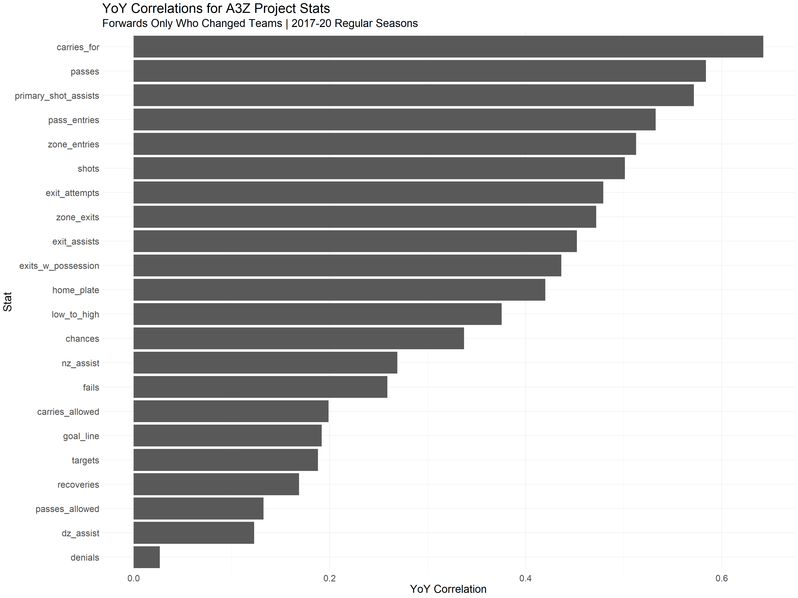
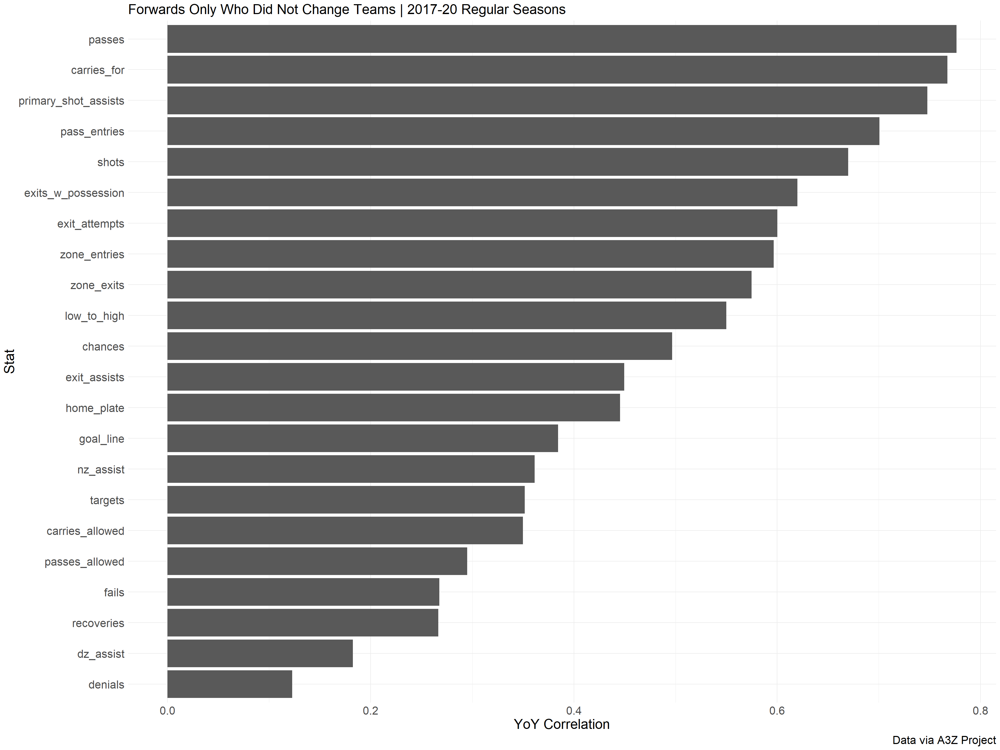
First up are the forwards, with the chart on the left representing forwards who changed teams in between seasons and the chart on the right representing players who were on the same team season over season. Players who stayed put, unsurprisingly, have the higher year over year correlations across the board. These stats (and really all measures of player actions/performance) are some mixture of player skill and context/role. Naturally we want to tease out and isolate player skill, but these measures are undoubtedly influenced by a player’s teammates and the role which his coach asks him to take on.
The stats related to transition (exits/entries) are most stable year over year as are the more general measures for passing plays and shot attempts tracked. As the specificity of the offensive play type increases, the correlations decrease given we are dealing with a smaller sample relative to the total sample for shots and passes. The stats tracked covering actions in the defensive zone are basically noise for forwards; these actions are extremely infrequent.
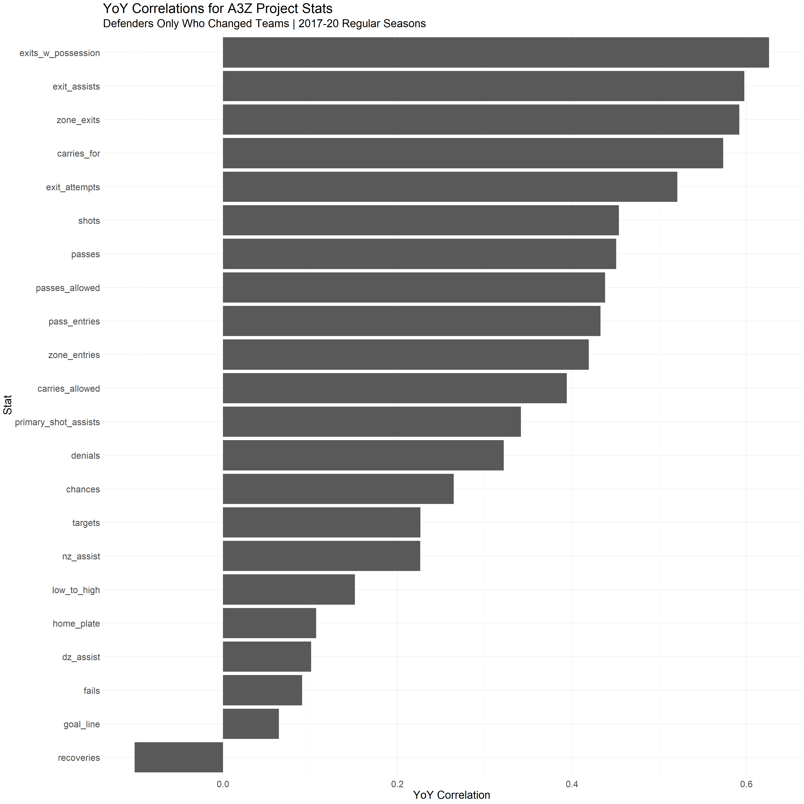
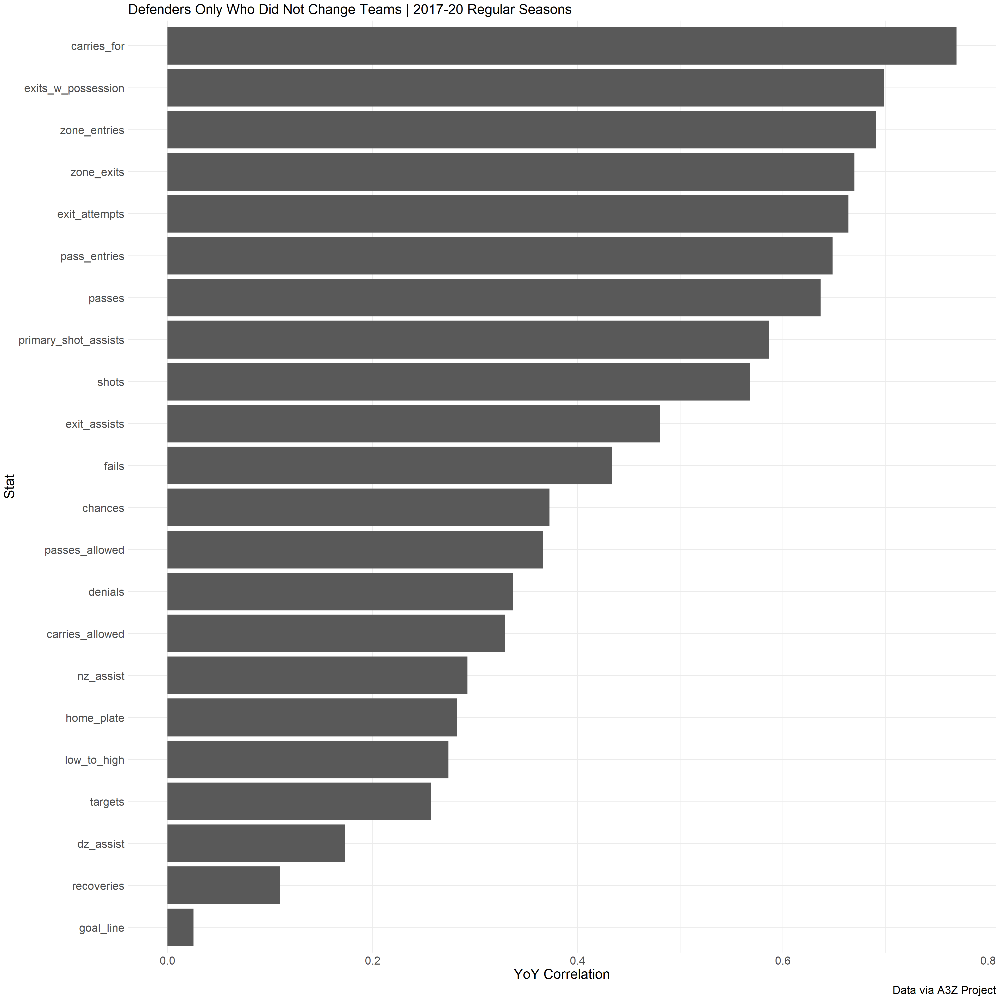
These charts for defenders are oriented in the same way as their forward counterparts; players who changed teams on the left, the rest on the right. Similar to the forwards, the transition stats are stickier; more specifically, the transition stats related to exits. Defenders are much more involved in moving the puck out of their own zone relative to their responsibility for gaining entry into the offensive zone. This will naturally lead to a stronger year over year relationship given this is a responsibility that is more uniformly shared across team contexts whereas the role defenders play in their team’s offensive attack is more variable depending on team structure and coaching. Defenders show much smaller correlations for offensive play-types. As alluded to above, they are less involved offensively and thus we are looking at a smaller sample of plays across seasons. This is also most likely the result of defenders having less control over offensive play than forwards.
For the analysis on the whole, it is worth pointing out that we are looking at correlations (\(R\)), not coefficients of determination (\(R^{2}\)). The latter represents the proportion of one measure that can explain the other’s (in this case seasons N and N+1) variance. Thus, a correlation of approximately 0.707 (\(\frac{1}{\sqrt{2}}\)) would mean that the prior season’s values explain half the variance in the current season. Take a gander at the prior two charts. Very few measures for both player types reach that 50% threshold. Correlations of about 0.316 would indicate just a 10% \(R^{2}\). Arbitrary endpoints and whatnot, but no matter how we slice it there’s very little signal year over year signal, especially for players who change teams. We can conclude that much of these microstats are more descriptive than prescriptive and we should be paying most attention to entries/exits at a high level, shot and passing generation on the whole (i.e. without segmenting by type). That is not to tracking these play types and entry defense is not important in our understanding of the game; there is plenty of research that shows these are essential to goal generation and prevention. Moreover, for individual players, it seems that many of them do not represent repeatable skill across seasons and are highly dependent on team context and good old-fashioned variance.
Finally, I will leave you with some aging curves for the more stable metrics. If there are any metrics not included here, feel free to contact me and I can produce those on your behalf.
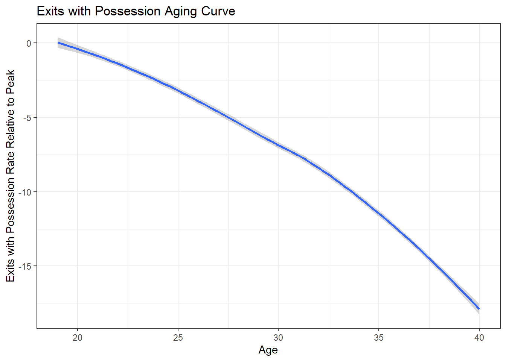
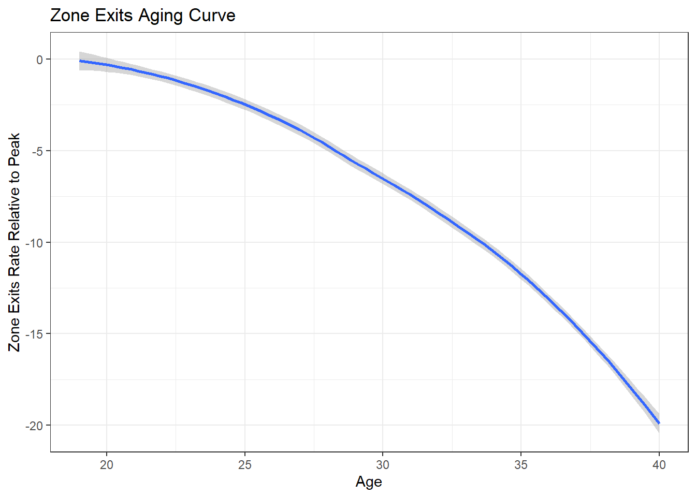
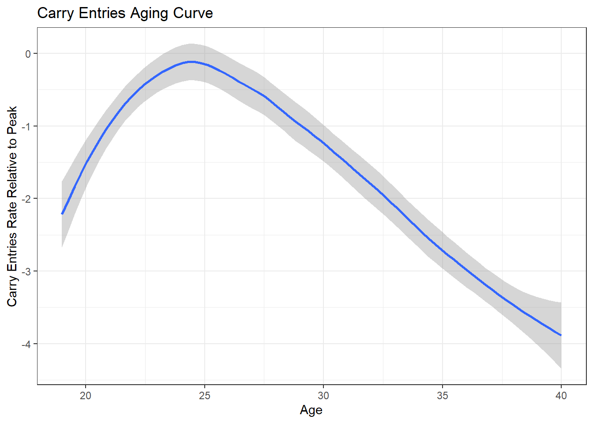
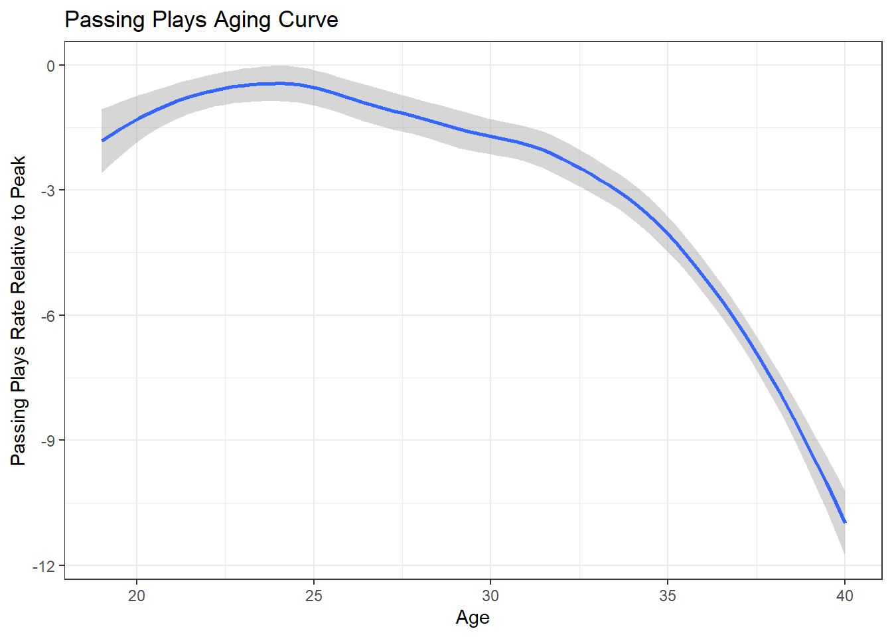
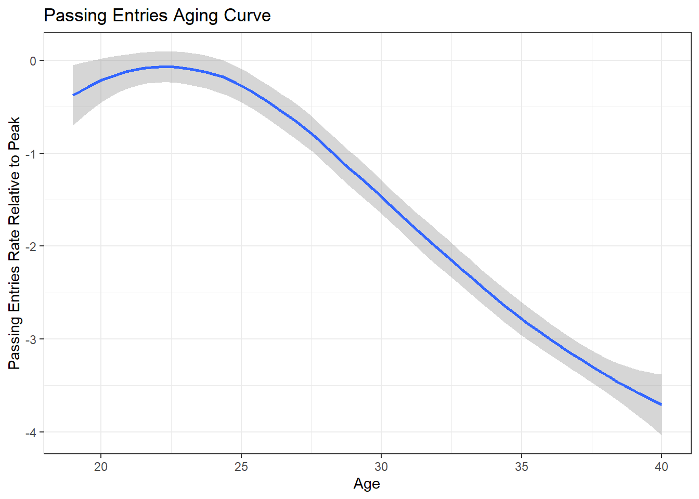
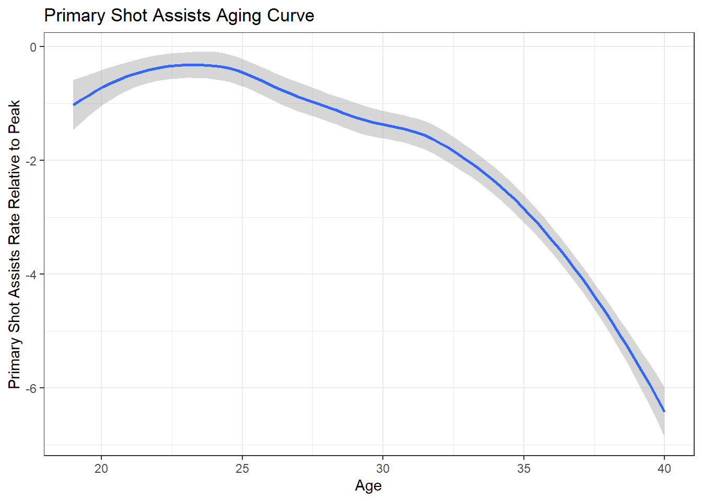
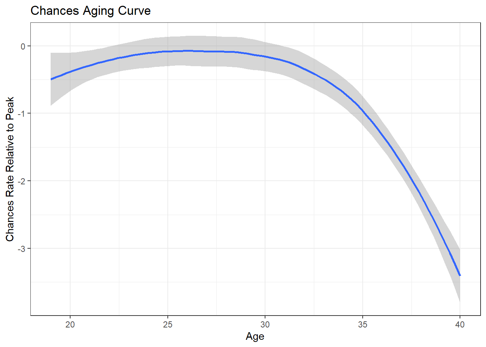